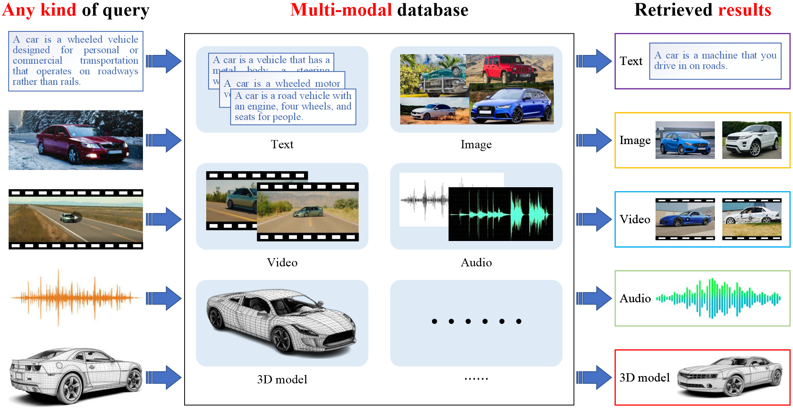
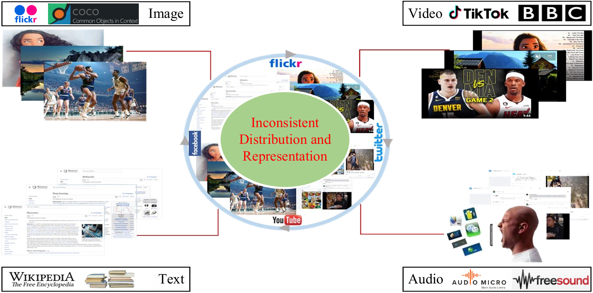
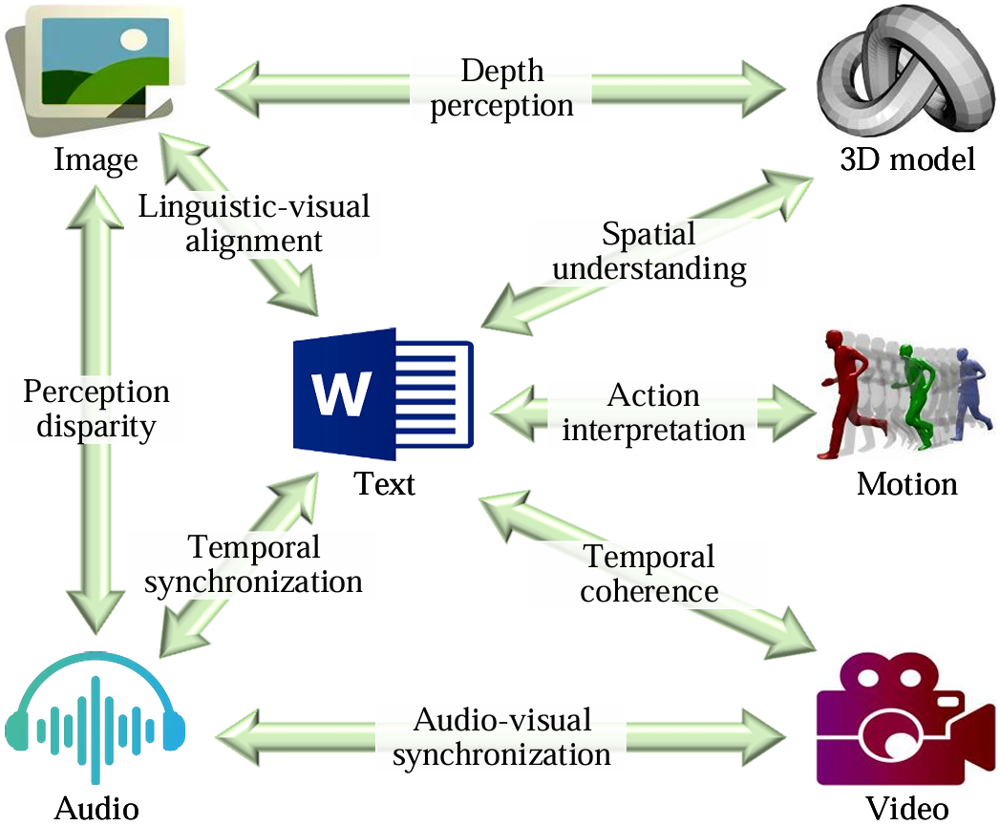
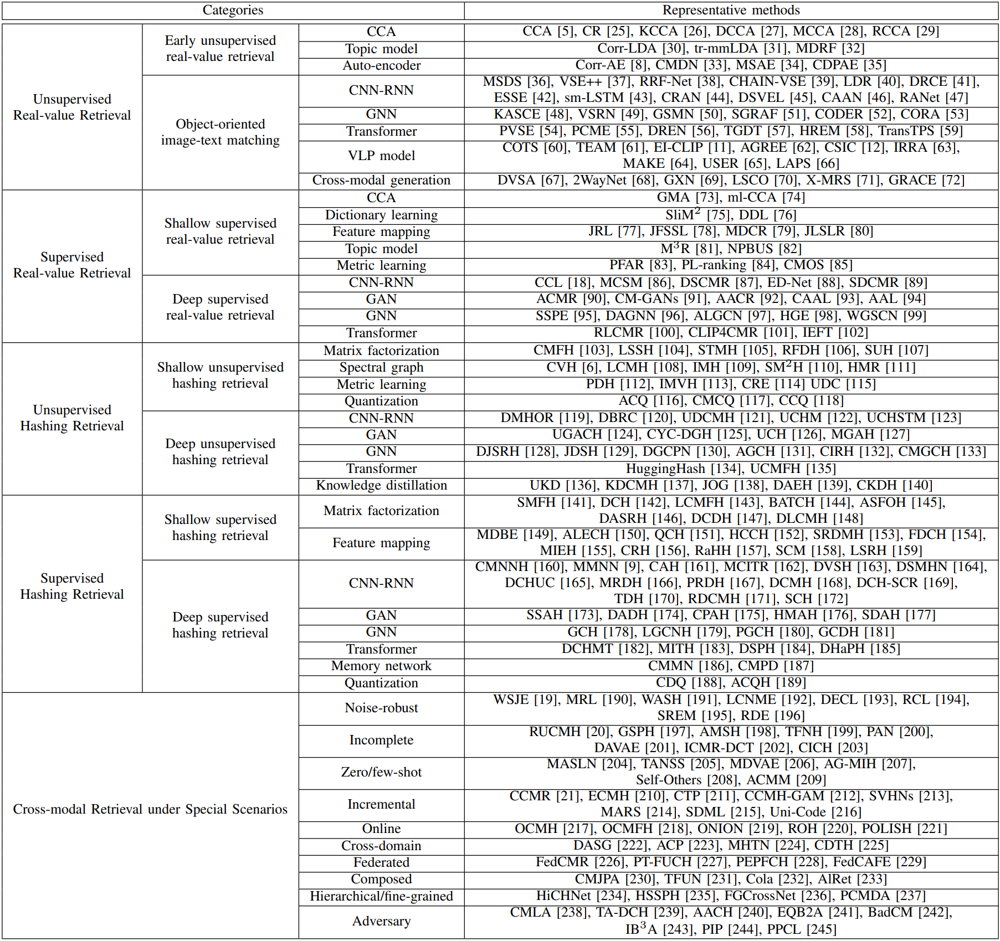

Abstract
With the exponential surge in diverse multi-modal data, traditional uni-modal retrieval methods struggle to meet the needs of users seeking access to data across various modalities. To address this, cross-modal retrieval has emerged, enabling interaction across modalities, facilitating semantic matching, and leveraging complementarity and consistency between different modal data. Although prior literature has reviewed the field of cross-modal retrieval, it suffers from numerous deficiencies in terms of timeliness, taxonomy, and comprehensiveness. This paper conducts a comprehensive review of cross-modal retrieval's evolution, spanning from shallow statistical analysis techniques to vision-language pre-training models. Commencing with a comprehensive taxonomy grounded in machine learning paradigms, mechanisms, and models, the paper delves deeply into the principles and architectures underpinning existing cross-modal retrieval methods. Furthermore, it offers an overview of widely-used benchmarks, metrics, and performances. Lastly, the paper probes the prospects and challenges that confront contemporary cross-modal retrieval, while engaging in a discourse on potential directions for further progress in the field.
Illustration of cross-modal retrieval.
The heterogeneous gap of multi-modal data
Cross-modal retrieval stands as a pivotal domain within multi-media retrieval, poised with immense potential in the realm of artificial intelligence. Its purpose is to glean semantically pertinent information from disparate modalities, leveraging given modal cues like text, image, or video. Nonetheless, the landscape of cross-modal retrieval is rugged, the paramount among which is gauging content affinity amidst heterogeneous modal data—a conundrum often dubbed the heterogeneous modality gap.

Diagram of heterogeneous modality gap.
The distinct challenges across heterogeneous modalities
As cross-modal retrieval has advanced, it now extends beyond traditional text-image retrieval to encompass a broader array of data modalities and retrieval tasks. This section offers a comprehensive review of cross-modal retrieval methods that involve modalities beyond text-image, including text-video, text-audio, image-audio, image3D, and more. We explore the unique challenges associated with these extended modalities, offering insights into the specific techniques and architectures designed to handle the complexities of each combination.

Diagram of distinct challenges across heterogeneous modalities.
Text-image cross-modal retrieval
We investigate three main questions during experiments:
- (1) Effectiveness. We wonder the imitation learning performance of cross-modal-retrieval by training it on the given demonstration data.
- (2) Zero-shot Generalization. We focus on generalization on unseen tasks. In other words, we wonder how the model will behave given unseen vision contexts like different objects, even with unseen instructions.
- (3) Ablation Studies. We further explore the essential factors that matter in adapting VLMs to robot control policy in the framework of cross-modal-retrieval.
(1) Imitation Performance

Table1: The imitation performance on various settings, all results are reported using the best-behaved model checkpoints. (Full) and (Lang) denote if the model is trained using unpaired vision data (i.e., vision data without language pairs); Freeze-emb refers to freezing the embedding layer of the fusion decoder; Enriched denote using GPT-4 enriched instructions. The gray rows denote numerical results evaluated by our re-trained model. We re-implement RT-1 and take the original code of HULC provided by Mees et al. All other results are reported by Mees et al.
(2) Zero-shot Generalization
we evaluate two aspects of generalization for our cross-modal-retrieval: vision and language. For vision generalization, we train models on splits A, B, and C and test on split D, which presents a different vision context. Our method significantly outperforms baselines in this vision generalization scenario (ABC → D), as shown in the above Table 1. Regarding language generalization, we enrich the language setting by generating 50 synonymous instructions for each task using GPT-4. We then randomly sample instructions during evaluation. Our method exhibits superior performance compared to all baselines in this language generalization setting. It's important to note that the success rate of our method on subsequent tasks shows a more noticeable drop compared to HULC. This may be due to our approach directly using word tokens as input during training, which can result in larger variations for synonymous sentences compared to HULC using a frozen sentence model for embedding instructions. To address this, we freeze the embedding layer of the feature fusion decoder in our method, leading to improved generalization and reduced performance drop.
(3) Ablation Studies
We conduct ablation studies for cross-modal-retrieval to answer the following questions:
- 1. How does cross-modal-retrieval perform with different heads?
- 2. Does vision-language pre-training improve downstream robotic tasks?
- 3. How do critical factors in vision-language pre-training affect robotic tasks?

Table2: Variants of VLMs tested. Pre-train denotes the original performance of VLM on the pre-training VL dataset, Best Avg. Len. denotes the best performance of the average success length of VLMs within 5 epochs, and Mean Avg. Len. denotes the mean performance of the average success length of VLMs of last 3 epochs on CALVIN..
(a) Various policy head

(b) Different training paradigms

(c) Open loop control

We observe also that 1) policy heads with history encoding performs the best and GPT and LSTM behaves similar under the framework of our cross-modal-retrieval; 2) tuning on the VL model itself on robotic tasks is indispensable due to limited capacity of the policy head and vision-langauge pre-training crucially improves the downstream robotic manipulation by a large margin; and 3) a larger model which usually results in better VL performance, achieves much higher performance, indicating that a larger VLM can be more data-efficient.
Text-image cross-modal retrieval

A compilation of representative text-image cross-modal retrieval methods. Below, CCA stands for canonical correlation analysis, CNN-RNN stands for convolutional neural network and recurrent neural network, GAN stands for generative adversarial network, GNN stands for graph neural network, and VLP model stands for vision-language pre-training model.
Cross-modal retrieval beyond text-image

A compilation of representative cross-modal retrieval methods beyond text-image retrieval. The abbreviations used remain consistent with the previous definitions.
Conclusion and Future Work
BibTeX
@article{li2023cross,
title={Cross-modal retrieval: a systematic review of methods and future directions},
author={Li, Fengling and Zhu, Lei and Wang, Tianshi and Li, Jingjing and Zhang, Zheng and Shen, Heng Tao},
journal={arXiv preprint arXiv:2308.14263},
year={2023}
}